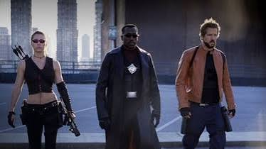

Marvel Character Gallery
This page shows some of marvels heroes and allows you to learn more about them and also add characters that you like as well.
Inspiration
I designed the website using a red and black color scheme to give it a strong Marvel-inspired appearance. The red background helps represent the red associated with Marvel, while the black background gives the website a darker and more dramatic look. The combination of red and black also has a personal meaning to me because it represents Blade, who is an important Marvel character to me. I wanted the design to reflect both the Marvel theme and my connection to the character.